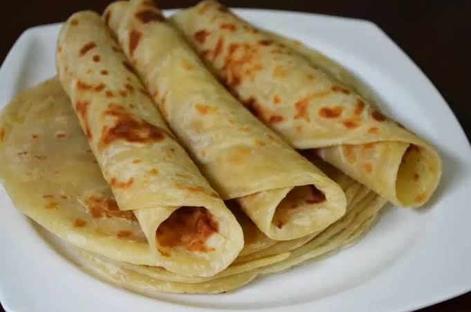

Home
Chapati

Description
Chapati is an unleavened flatbread that originated on the Indian subcontinent and became a staple in East African cuisine, including in Kenya.
Ingredients
- 3 cups (about 375g–450g) all-purpose / wheat flour (maida), plus extra for kneading and rolling
- 1 teaspoon salt
- 1 tablespoon sugar (optional, for light sweetness and browning)
- 3 tablespoons cooking oil or melted ghee, plus extra for brushing and frying
- 1¼ cups (about 300ml) warm to hot water (add gradually)
step-by-step instructions
- Mix the dough: In a large bowl, mix the flour, salt, and sugar (if using). Stir in 3 tablespoons of oil or melted ghee. Slowly add warm water while mixing until a soft, slightly tacky dough forms.
- Knead and rest: Turn onto a lightly floured surface and knead for 8–10 minutes until smooth and elastic. Cover with a damp cloth or bowl and rest for 20–30 minutes.
- Shape for layers: Divide the dough into 8 balls. Roll each ball into a thin circle or rectangle, brush lightly with oil or ghee, and roll into a tight log ("rope") or slice into strips and roll into a spiral coil, tucking the end underneath. Let the coils rest for 10 minutes so the gluten relaxes.
- Roll out: Lightly flour your surface and roll each coil into a circle about 6–8 inches wide and 1/8 inch thick.
- Cook on medium heat: Heat a heavy skillet, tawa, or pan over medium heat. Place a chapati on the dry pan for a few seconds to 1 minute until light bubbles appear.
- Oil and flip: Flip the chapati, brush the top with a little oil or ghee, and cook until golden-brown spots form. Flip again, brush the other side lightly, and press gently with a flat spatula until cooked through and golden.
- Keep warm: Stack finished chapatis wrapped in a clean kitchen towel or covered container so they stay soft and steamy. Serve warm alongside beef stew, githeri, or beans.
Home